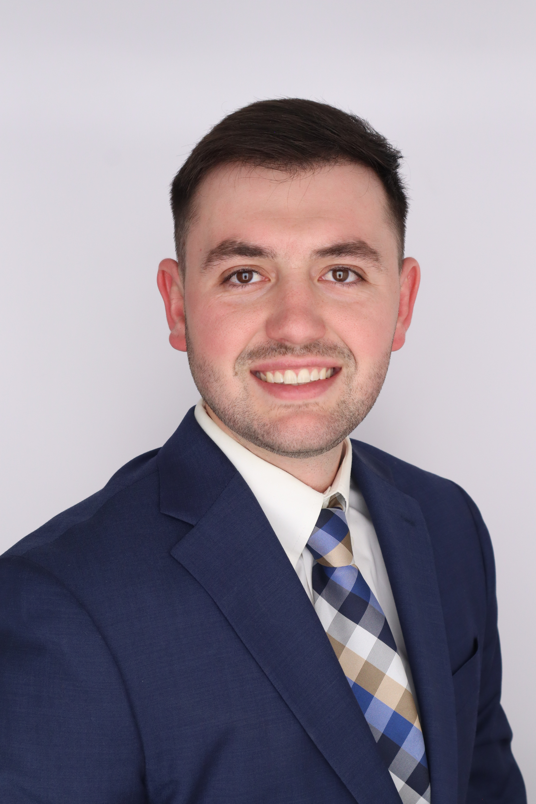

About Nate
I am from a small town in Northern Illinois called Genoa. I grew up on a 4200 acre farm with my parents and brother. Our farm now has 3 generations working on it. My brother, cousins, and I spent 15 years running a self service pumpkin stand and saved every penny to pay for our college. I could not be more thankful for growing up on a farm.
After high school, I decided to attend the University of Iowa, and study in the Tippie College of Business. I am a Business Analytics Major that will be graduating in May. I look forward to my professional career after college. I accepted a Technology Risk Consultant position with Ernst & Young. I will be moving to Des Moines and can't wait to see a new city and take on a new adventure
My favorite things to do in my free time is to attend sporting events. I love the Bears, Cubs, Bulls, and of course, the Hawkeyes. I also love spending time at the lake fishing and doing watersports. I love wakeboarding and tubing in particular. I also love being competitive with my friends playing games like bags, spikeball and pickleball.
Professional Skills:
- Microsoft Office
- R
- SQL
- HTML
- Communication Skills
Contact Information:
- Phone: (815)901-7390
- Email: nnesler7@gmail.com
- School Email: nnesler@uiowa.edu
